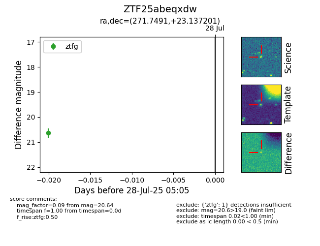

Target ZTF25abeqxdw at 2025-07-28 05:05, see:
FINK: fink-portal.org/ZTF25abeqxdw
Lasair: lasair-ztf.lsst.ac.uk/objects/ZTF25abeqxdw
ALeRCE: alerce.online/object/ZTF25abeqxdw
alt names
ZTF25abeqxdw (ztf,fink)
coordinates:
equatorial (ra, dec) = (271.7491,+23.13720)
galactic (l, b) = (49.5267,+19.68673)
photometry
last ztfg=20.64
1 ztfg detections
